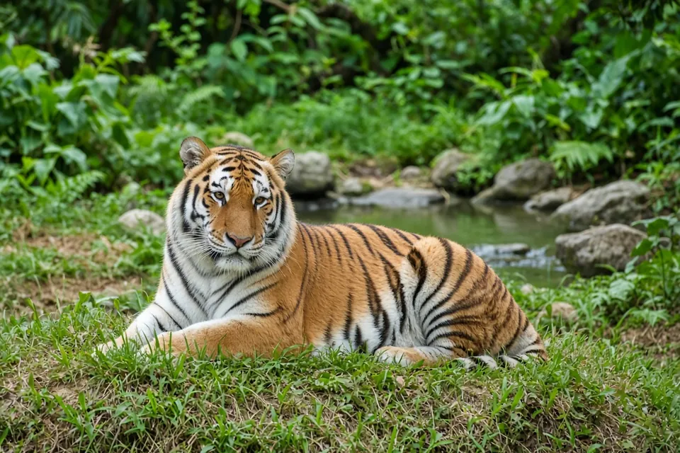

Home › Blog › How long do big cats live?
How long do big cats live? Wild vs captivity, by species
Most big cats live noticeably longer in accredited zoos than in the wild. In the wild, cheetahs survive on average only about 8 to 10 years, lions and tigers typically reach 10 to 15 years, leopards and snow leopards usually live into their early teens, and jaguars often reach the mid teens. In zoos, every one of these six species regularly lives well into its late teens, and several routinely reach their twenties. The gap comes mostly from what captivity removes: starvation, disease, territorial fights and conflict with people.
Wild vs captivity, species by species
The table below gives a typical range for each species. These are rounded, sourced estimates, not guarantees for any one animal; see the notes under each species for how the figures were measured.
| Species | Typical wild lifespan | Typical lifespan in accredited zoos |
|---|---|---|
| Lion | Lionesses often live into their mid teens, with a documented wild maximum of 19 years; males rarely survive past 12 to 15 years because of fights over pride takeovers | Late teens to the low 20s |
| Tiger | 10 to 15 years | Up to about 20 years |
| Leopard | 10 to 12 years on average | Up to about 23 years; median life expectancy for the Amur subspecies in managed care is about 18 years |
| Jaguar | 12 to 15 years | Up to about 20 years |
| Cheetah | 8 to 10 years, the shortest of the six | 12 to 15 years on average, with some individuals reaching 17 |
| Snow leopard | 10 to 12 years | Up to about 21 to 22 years, among the longest captive lifespans of the six |
Why do big cats usually live longer in zoos?
A 2016 study compared longevity between wild and zoo populations across more than 50 mammal species (Tidiere and colleagues, Scientific Reports). Every one of the 15 carnivore species in the dataset, including the lion, lived longer in zoos than in the wild. The effect was strongest in species with a fast pace of life in the wild, meaning a naturally short lifespan, high reproduction and high mortality, because a zoo environment removes so many of the dangers those species would otherwise face.
For big cats, the things that usually cut a wild life short are rarely simple old age. Starvation during lean seasons, disease, fights with rivals of the same species, and conflict with people, including poaching, snaring and road deaths, all take a steady toll that reliable food, veterinary care and no territorial rivals mostly remove in a managed zoo setting. The study's authors also note that a fair before and after comparison needs an "extinct cohort," a full group of animals that have already died, so today's improved husbandry has not yet fully shown up in the data.

Lions: pride takeovers cut male lifespans short
In a 2010 overview of lion biology for Current Biology, Craig Packer of the University of Minnesota's Lion Research Center put the maximum wild lifespan at 19 years for females and 15 years for males. The Lion Research Center's own field guide to ageing lions puts it more plainly for the typical case: males rarely reach 12 years of age in the wild, while females may live up to 19.
The reason is social rather than biological. A male lion holds a pride only for as long as he and any coalition partners can defend it against rival males, and a male that loses a takeover fight is usually killed or driven off to a harder life outside a pride. Lionesses, who typically stay in the pride where they were born, face fewer violent challenges over their lifetime. In zoos, where there are no rival coalitions to fight and no territory to defend, the Smithsonian's National Zoo reports that lions can live into their late teens or early 20s.
Tigers: it is rarely old age that ends a wild tiger's life
The Smithsonian's National Zoo gives a wild tiger lifespan of 10 to 15 years, rising to as much as 20 in human care; its Sumatran tiger Rokan lived to almost 20, about five years past the typical wild life expectancy for his subspecies.
A long term radio tracking study of Amur tigers on and around Russia's Sikhote Alin Biosphere Zapovednik found that most tigers never got the chance to grow old (Goodrich and colleagues, Journal of Zoology, 2008). Of 24 radio collared tiger deaths recorded during the study, 83% were human caused, mostly poaching, and every radio collared subadult that tried to disperse into new territory was poached. Estimated annual survival was highest for adult females, at 81%, and lowest for dispersing subadult males, at 41%, which matches the pattern seen in lions: young, dispersing animals face the most risk.
Leopards: location decides how long they live
The African Wildlife Foundation gives wild leopards an average of 10 to 12 years, against up to 23 years in captivity; in managed care, the San Diego Zoo Wildlife Alliance records a median life expectancy of about 18 years for the Amur leopard subspecies.
How long a leopard survives depends heavily on where it lives. Researchers pooling 10 published and 8 unpublished telemetry studies from across southern Africa found annual survival of 0.88 inside protected areas, against only 0.55 outside them (Swanepoel and colleagues, Oryx, 2014). Outside protected areas, people were the leading cause of death for both sexes, through deliberate killing, problem animal control and road accidents. Inside protected areas, by contrast, young leopards (juveniles) had far lower survival than subadults or adults, mostly from natural causes rather than people. The pattern is less about age and more about place: a leopard in a well protected reserve has a much better chance of reaching an old age than one living alongside people.
Jaguars: a long lived cat when habitat holds up
The San Diego Zoo Wildlife Alliance gives jaguars 12 to 15 years in the wilderness and up to 20 years in zoos. Reaching the high end of that wild range is well documented: in 2023, researchers surveying western Mexico's Sierra Madre del Sur recaptured on camera trap a female jaguar first photographed in 2014, estimating her free living age at 11 to 12 years and calling her the oldest documented free living female jaguar known for the Pacific coast of Mexico, and possibly for Central America (Monterrubio Rico and colleagues, Mammalia, 2024).
Jaguars also have a comparatively slow reproductive life, consistent with a longer potential lifespan. A long term study of a Pantanal population found females did not have their first litter until an average age of about 32 months, with successful litters spaced roughly 22 months apart (Fragoso and colleagues, Journal of Mammalogy, 2023). That slower pace of reproduction, typical of a longer lived species, is one reason jaguar populations recover slowly after a decline.

Cheetahs: the shortest lived big cat, wild or captive
The Smithsonian's National Zoo gives wild cheetahs just 8 to 10 years, rising to 12 to 15 years in human care. Even in zoos, that is shorter than any other big cat on this page.
A 25 year demographic study of Serengeti cheetahs found that females who survived to independence lived an average of 6.2 years, with the oldest recorded female reaching 13.5 years; males averaged shorter lifespans still, partly because many disperse out of a study area entirely and are harder to track for life (Kelly and colleagues, Journal of Zoology, 1998). Short lifespans go hand in hand with the cheetah's low cub survival; for more on why so few cubs reach independence, see why do so few cheetah cubs survive?
Snow leopards: hard to study, but the captivity numbers are solid
Because snow leopards live at low densities across remote, high altitude terrain, there are far fewer long term wild studies of this species than of the other five. The Snow Leopard Trust gives a wild life expectancy of 10 to 12 years, against zoo records of up to 22 years, among the longest captive lifespans of any big cat on this page. The IUCN Cat Specialist Group gives a wider working range of 10 to 20 years to reflect that uncertainty.
Why do lifespan figures vary between sources?
Average lifespan, median life expectancy and maximum recorded age are three different numbers, and sources do not always say which one they mean. A population can have a low average lifespan even if a few individuals live a long time, simply because many young animals die before reaching adulthood, which is especially true of cheetahs. Wild figures also usually come from much smaller sample sizes than zoo records, since tracking a wild big cat for its whole life takes years of radio collars, camera traps or individual recognition by researchers in the field.
Zoo figures have their own wrinkle. A fair comparison needs an extinct cohort, a group of animals that have all already died, so recent improvements in veterinary care and husbandry will not show up in the data for years to come. For these reasons, treat every figure on this page, including the table above, as a rounded, sourced estimate rather than a fixed number.
Key takeaways
- All six big cats live longer on average in accredited zoos than in the wild, matching a pattern seen in every carnivore species in a 2016 comparative study (Tidiere et al. 2016).
- The cheetah has the shortest lifespan in the wild and in captivity, at about 8 to 10 years wild and 12 to 15 years in human care (Smithsonian's National Zoo).
- Wild male lions rarely survive past 12 to 15 years, chiefly because of fights over pride takeovers, while females can live close to 19 (Packer 2010; University of Minnesota Lion Research Center).
- For tigers, human caused mortality, mostly poaching, accounted for 83% of deaths in a long term Russian study (Goodrich et al. 2008).
- Leopard survival depends heavily on location: 0.88 a year inside protected areas against 0.55 outside them in a southern African study (Swanepoel et al. 2014).
- A wild female jaguar in Mexico was confirmed alive at an estimated 11 to 12 years old, among the oldest free living female jaguars documented for the region (Monterrubio Rico et al. 2024).
Frequently asked questions
What is the longest a big cat has lived?
Captivity records are the longest documented: the Snow Leopard Trust reports snow leopards living as long as 22 years in zoos, and the San Diego Zoo's black jaguar Orson reached 21. Wild records are shorter; the longest documented wild lifespan among these six is a lioness, with a maximum of 19 years (Packer 2010).
Which big cat lives the longest in the wild?
Based on the sources above, lionesses have the highest documented wild maximum, at 19 years (Packer 2010), though well fed jaguars and leopards in good, protected habitat can also reach the mid teens.
Which big cat has the shortest lifespan?
The cheetah, both in the wild and in zoos. Wild cheetahs average 8 to 10 years (Smithsonian's National Zoo), and a 25 year Serengeti study found females that survived to independence lived an average of 6.2 years (Kelly et al. 1998).
Why do zoo animals usually live longer than wild animals?
A 2016 comparative study found zoo populations lived longer than wild populations in 84% of over 50 mammal species studied, including every carnivore. Zoos remove many of the risks that shorten wild lives, such as starvation, disease, territorial fights and conflict with people (Tidiere et al. 2016).
Do lions live longer than tigers?
Roughly similar in the wild, but by different patterns. Wild lionesses can live close to 19 years while male lions rarely pass 12 to 15 (Packer 2010), whereas wild tigers of both sexes typically live 10 to 15 years (Smithsonian's National Zoo).
How do scientists know how long wild big cats live?
Mainly from long term field studies using radio collars or GPS collars to track known individuals for years, plus camera trap photo identification using unique stripes or rosettes, and in some cases decades of direct observation, as in the 25 year Serengeti cheetah study (Kelly et al. 1998).
Cite this page
APA: BigCatWise. (2026, November 2). How long do big cats live?. https://bigcatwise.com/blog/how-long-do-big-cats-live.html
MLA: "How long do big cats live?." BigCatWise, 2 Nov. 2026, bigcatwise.com/blog/how-long-do-big-cats-live.html.
Chicago: BigCatWise. "How long do big cats live?." Last modified November 2, 2026. https://bigcatwise.com/blog/how-long-do-big-cats-live.html.
Please check the date you accessed the page and adjust to your teacher's or journal's style guide.
Sources
- Smithsonian's National Zoo and Conservation Biology Institute: Lion
- University of Minnesota Lion Research Center: Aging Lions in Eastern and Southern Africa
- Packer (2010) Lions, Current Biology 20(14): R590-591. DOI 10.1016/j.cub.2010.05.003
- Smithsonian's National Zoo and Conservation Biology Institute: Tiger
- Goodrich, Kerley, Smirnov, Miquelle, McDonald, Quigley, Hornocker and McDonald (2008) Survival rates and causes of mortality of Amur tigers on and near the Sikhote Alin Biosphere Zapovednik, Journal of Zoology 276(4): 323-329. DOI 10.1111/j.1469-7998.2008.00458.x
- African Wildlife Foundation: Leopard
- San Diego Zoo Wildlife Alliance: Leopard
- Swanepoel, Somers, van Hoven, Schiess Meier, Owen, Snyman, Martins, Senekal, Camacho, Boshoff and Dalerum (2014) Survival rates and causes of mortality of leopards Panthera pardus in southern Africa, Oryx 49(4): 595-603. DOI 10.1017/S0030605313001282
- San Diego Zoo Wildlife Alliance: Jaguar
- Monterrubio Rico, Lopez Ortiz, Nunez Landa, Soto and Charre Medellin (2024) Noteworthy records of survival, longevity and recruitment in a key area for jaguars in Western Mexico, Mammalia 88(6): 495-499. DOI 10.1515/mammalia-2024-0043
- Fragoso, Rampim, Quigley, Haberfeld, Espindola, Araujo, Sartorello and May Junior (2023) Unveiling demographic and mating strategies of Panthera onca in the Pantanal, Brazil, Journal of Mammalogy 104(2): 239-251. DOI 10.1093/jmammal/gyac123
- Smithsonian's National Zoo and Conservation Biology Institute: Cheetah
- Kelly, Laurenson, FitzGibbon, Collins, Durant, Frame, Bertram and Caro (1998) Demography of the Serengeti cheetah (Acinonyx jubatus) population: the first 25 years, Journal of Zoology 244(4): 473-488. DOI 10.1111/j.1469-7998.1998.tb00053.x
- Snow Leopard Trust: Life Cycle
- IUCN SSC Cat Specialist Group: Snow leopard
- Tidiere, Gaillard, Berger, Muller, Lackey, Gimenez, Clauss and Lemaitre (2016) Comparative analyses of longevity and senescence reveal variable survival benefits of living in zoos across mammals, Scientific Reports 6: 36361. DOI 10.1038/srep36361
Figures are rounded summaries of the sources above. Wild populations are hard to count, so estimates change as new surveys are published.